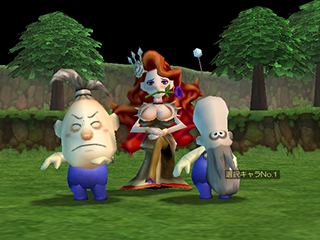
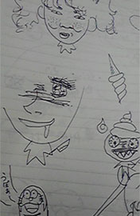
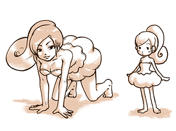
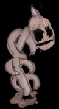
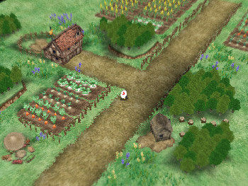
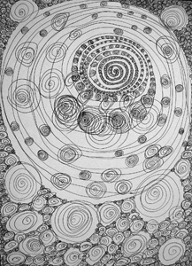
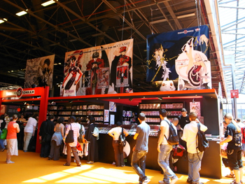
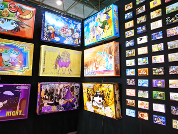
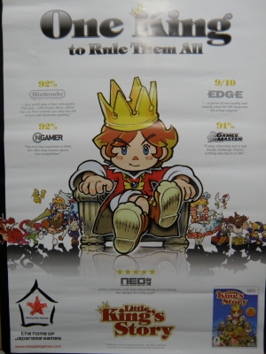
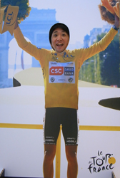

みなさま、はじめまして！
2Dグラフィックを主に担当しておりました、杉元と申します。
王様物語の開発は途中から参加させていただいたのですが、
メニュー関係のデータ実装や、イベント中登場する挿絵、
3Dモデル、モーション、あとは企画のトムさんのお手伝いなど───
手広くお仕事させていただきました！
ハイ。ご紹介だと、私ずいぶん怪力そうですが…
そうではないですよ！か弱いですよ！本当ですよ！！
…あ、あれｗ？
トムさんはじめ、開発のメンバーにはずいぶん
ボケ＆ツッコミを入れさせて頂きました…！
そして、いつも騒がしくてすんませんでしたー！
さて、私は開発中のいろいろな出来事をつづりましょう。
やはり開発中は思い通りにいかなかったり、
締切間際で焦っていたり、ピリピリしてしまうものです。
ですが…やっぱりそれじゃぁ、体に悪いですよね？
ということで、私はそんなとき、オバカなことしてました！
自分の仕事はきっちり進めて、
気合い入れる所は入れて、抜くところは徹底的に抜く！
──こういうことって、結構大事だと思います。
王様ではキャラクター達のモデルを個々に見れる機能がありました。 
キャラクターによって──ですが、頭をスゲ変えることができるので、
それをつかってグラフィック陣でいろんなことをさせていました。
実際、松本さんが一番ノリノリでやってたりしたんですよね…ｗ！
一例がこちら…
わかりますかねぇ…？（今見てみると表情がいまいちだぁ！）
他にも数々の名作がございますが…
なんせ、グラフィック陣には（自分含め）変わった方々が多いので──
いろんなものに引っかかりそうなものばかり…
エロやら、グロやら…ごにょごにょ…なので、これ以上はお見せできませんｗ
 
次に、グラフィッカーはいたるところに落書きをしたくなります。
これは一種のサガなのでしょうかね？
よっぽど疲れていたんだなと、当時を振り返ります。
疲れた時の落書きは「ひっひっひ」って…言いながら描いてる？
やたら、変な絵が多いです。
そして─────
落書きで…確か書いてたんですがぁ～～～
紙どっかいっちゃいましたねぇ…。
ってことで、描いてたものを思い出しながらもう一回描いてみました！
多少きれいに描いてますが…＾＾；
この子はしばらくみんなが使う共有のPCのところに
しばらく置いておかれました！
…いや、私が置いておきましたｗ！
いつの間にか、描いていたキャラクターが増えてたときは
なんか、嬉しかったなぁ～…
未だに、誰が描き足したのかナゾなんですよね！
振り返ってみれば、辛くても楽しいことがいっぱいあった王様の開発。
正直なところ、マスターアップ前は「おわっちゃうのかぁ～」と
ちょっと寂しかったりもしました…。
自分なりにですが、やれることはやったと思っています。
悔いが残る仕事は1ドット単位でやってない！…はずｗ！
できれば、数多くのユーザーの皆様に遊んでもらいたい
作品になっておりますので、どうぞ！よろしくお願いいたします！
それでは、この辺で！
ここまで読んで頂き、ありがとうございました＾＾

みなさま、、元気ですかっ！！初めまして
立ち位置がよくわからず、おたおたしておった、三十路前。
ガウディ、ダリ、アレックスグレイを精神的師匠とし、
ムカデを愛するアートディレクター兼5次元からの使者、松本真一です。
全ては子供の頃、七色に輝く巨大なムカデを見た事から
始まったように思えます。
まともな文章なんてものは、中学高校の読書感想文のようなものが
最後だった気がしますので、不安です。が。
書いているとそうでもなくなってきました。
もともとまともな文章なんて書けません。
さて、本作品では、企画立ち上げ時から関わらせていただきまして
今までは背景制作をメインにゲーム制作に関わってきたのですが
背景以外にも深くかかわったりと、なにもかもが新鮮で
過去最高の辛さと共に過去最高の楽しさ、
過去最高の全く関係の無い落書き達が
長期記憶にびっしりで大変思い出深い作品です。
思えば当初、産業革命時代のイギリスがモチーフだったのですが
プロトタイプ中、中世風味にやっちゃおうって事で、
今の路線の礎ができました。
一番古いキャプチャ画像はこんな感じでした。

紆余曲折を経て、どんどん良くなっていく画面達。 最終的な画面への変貌ぶりが今や素敵思い出です。 クロスレモネードと長沢王子のファンになりました。
そんななか、私がお勧めする
演出を一つ。
ゲームオーバーになってみてくださいな。
『フライングマシンシーン』
『最後のボス戦のどこかで』
どんなにプレイがうまかろうが
一度は。ぜひ。
まつもと『王様物語の品質を落としかねない絵ですね…；』
きむP 『まぁ、大丈夫、でしょう；…いいんぢゃない！？』
連日の疲れも手伝ってくれたおかげで
上記のように、描いた本人達も後で不安になった一枚絵達をぜひ。
※雑魚戦中の死亡演出もせつなくて素敵です。ぜひ。
ゲームオーバーになってみてくださいな。
最後に
たぶんこれがトムさんに見られてしまった落書きの一部だと思われます。
今回は落書きパワーで乗り切ったと言っても過言ではありません。たぶん。

さて・・・失礼いたした所で終わりにします。
皆の愛が詰まった王様物語に清き一票を！！！！！！！！
（今回の文：キャラクターデザイナーの皆葉英夫）
キャラクターデザイナーという言葉がある。
キャラクターとは本来、個性や性格を指す言葉だが、
ゲームやアニメーションの世界では、外見を視覚化する人を指す事が殆どだ。
キャラクターの性格を設定した人は、たぶん、
キャラクター設定とかいう名前になるのだろう。
そして、一般的に使われているキャラクターデザインである、
個性や性格を視覚化する事であるそんなポジションに、
私はこの王様物語ではついた。
時代というものは流れるもので、一昔前までは確実に個性の強い
キャラクターの方が求められていた。
ほんの一世代機前の話しである。
しかし現在はどうだろう、求められるキャラクター性が細分化し、
デザインに拾い上げる事は困難になってきている（または、
情報社会の発達による伝播の変化か）。
TV上で爆発的人気の国民的アイドルが生まれてきづらいのも、
そうした要因として見る事もできるのかもしれない。
（最近ではプロゴルファーの石川遼さんくらいか）
では、現在主流のキャラクターデザインとは何か。
それは、エディットであると思う。
キャラクターデザイナーは、いくつかの要素を用意して、
遊び手側に要素を選択させて、好みのキャラクター、
または演じてみたいキャラクターを好みに応じて作るのだ。
しかしこれは、すでにキャラクターデザイナーは
ユーザー本人という事になるのかもしれない。
多くのユーザーの希望を包括する事ができていない私にも、
この流れを否定する事はできない。
しかし王様物語では、キャラクターエディットを搭載していない。
時代に抗うつもりでもない。
極力デザインの中の「意味」を減らし極限までシンプルな王様のデザインにして、
誰が見ても、それぞれの王様像を頭の中で作り出すことができる。
それは北米の一人称式のシューティングゲームと同じ様なニュアンスだ。
なまじっか意味のあるものが目の前に見えていると感情移入の妨げになる。
現代的なシンプルを追い求めて、何稿も繰り返し磨き上げてきた用の美である。
ゲームの中の、少年がある日「王冠」を手に入れると、
そのときから少年は誰からも敬われる王様になる、
というわずかな設定をどこまで引き出すのかがカギになっている。
誰が見ても「この子は王様ね」
王様物語のキャラクターは、そんな葛藤の中、生まれている。
 ※クリックすると大きい画像が見られます
※クリックすると大きい画像が見られます
 ※おまけ：“ヘンナノ”ではありません。皆葉氏のデザインを見て驚愕の表情を見せるきむＰです。
※おまけ：“ヘンナノ”ではありません。皆葉氏のデザインを見て驚愕の表情を見せるきむＰです。
こまんたれヴです、パリから戻ってまいりました倉島です。
すっかり時差ボケが収まらず昼夜逆転の無茶苦茶な生活を過ごしてます。
さて『絵のつわものたち大紹介週間』ということで改めて自己紹介。
ヘンナ者＆奇形の類のデザインを担当させていただきました倉島一幸と申します。
ちなみに消防車のミニカーよりもガンダムが好きです。
『王様物語の絵仕事に関する事』から若干外れた内容かもしれませんが、
今回、パリのレトロゲーム誌「Pix'n Love」さんのブースを間借りさせていただき、
パリ郊外で開催された第10回ジャパンエキスポ JAPAN EXPOへ出展したのでございます。

会場の雰囲気はコンナ感じ。コミケとゲームショーと日本伝統文化紹介展を足した様な とにかく広くて人が仰山で大規模な大日本フェスティバルなのです。 間借りしたブースにて、カミさんと私で架空ゲームソフトパッケージ展を開催。
大小様々なジャンルのオリジナルゲームパッケージを80点ほど日本から運び込み展示。 展示トラブルが多発して大変でしたが、やりきった満足感もひとしお。 王様物語と関係ねえじゃんか！と薄くお怒りでしょうが、ちゃんと王様宣伝大使してきました。
出発前のギリギリのタイミングでキムPから預かった欧州版ポスターを携え、 現場で急ごしらえの紙ねんどオニーを飾り、EUゲームファンの方々に地味にア・ピール！ 欧州版を遊んでいただいたファンの方々は一様に満足なご感想。嬉しいかぎり。 かいつまんだ感想としましては「ちょっと変わった世界観が面白い」や「背景が美しい」 「モンスターが意味不明で良い」など、など。 絵を描いた人が居たので持ち上げてくれたのでしょうか、絵関係の感想が多めでした。 もちろんシナリオ＆レベルデザイン＆システムも好感触。良がった良がった。持参してくれたパッケージにサインを描かせてもらったりもしましたが、
ワンポイント記載キャラリクエストは「ギューコツ」が圧倒的に多かったです。
パリは牛骨ブームなのでしょうか？
デザイン作業自体はけっこう前の話なので、自分としては忘れていることが多いのですが、
海外の人たちが遊んでくれて、楽しんでもらえたことを直接肌で実感できた事は、
なんとも開発冥利に尽きるというか、嬉しくてちょいと泣きそうになっちゃいました。
会場に来ていただいた皆様、本当にありがとうございました！深くメルシー。
結局、絵仕事に関する事とあんまり関係なかったですね。すいません…

完全にヨゴレキャラの時差ボケ倉島がお届けしました。シルブプレ。都議選も終わり、いよいよ総選挙が楽しみな昨今、
皆様におかれましてはいかがお過ごしでしょうか。
きむＰ腹心兼ＰＲ大臣補佐紛い、池田トムです。
先週まで、プログラマー、ムービーセクションと
開発に携わったスタッフを紹介しています。
今週はグラフィックパートの皆様にバトンタッチ。
おなじみクラシマさん、ミナバさん両名に続いて、
思い出深い福岡の開発メンバーを、２名紹介します。
ひとりめは、
魅惑的な曲線と思い切った配色センスがステキな
リードグラフィッカーの松本さん。
（ふとみたノートが渦巻きでビッシリと真っ黒だった
時から、地球外生命体の疑いを持っていましたが、
昼飯が主にケーキとプリンだということが発覚し、
どうやらその疑いが真実であると確信しました。）
ふたりめは、
ハートフルな絵と様々なトム手伝いに大活躍の紅一点
２Ｄグラフィッカーの杉元さん。
（時々動物的に身の危険を感じる事がありましたが、
決まってその先には貴女の姿がありました。
また、見た目以上に腕力が強いので、軽い気持ちで
ツッコミを喰らって、半べそかく日もしばしばありました。）
そんな頼りになる皆様に、華麗なる絵の制作秘話やら
最近のトレンドやらをつづって頂きたいと思います。
それでは。


 クリエイターズBLOG トップ
クリエイターズBLOG トップ